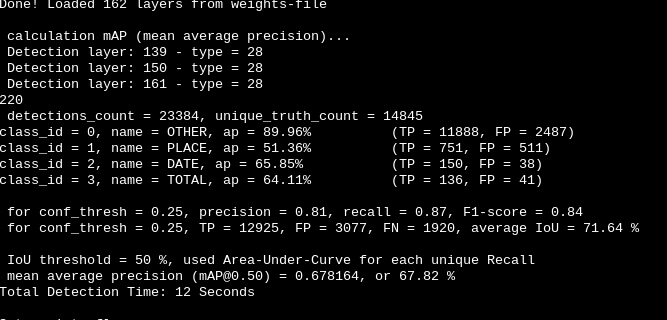
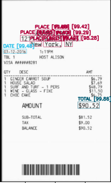
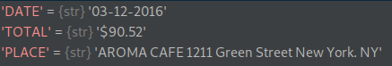
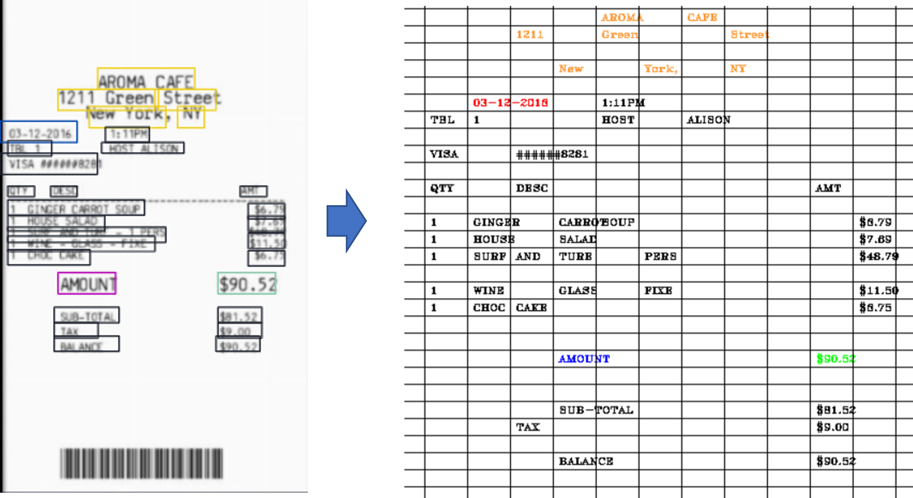
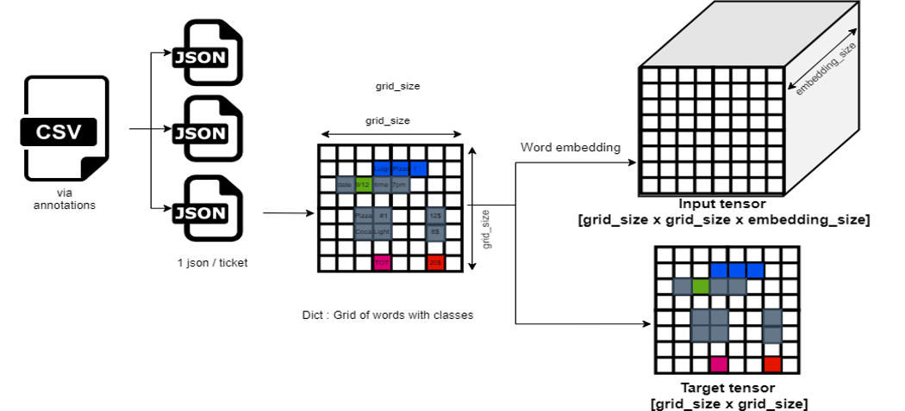

Description¶
Opteeq is a student project that uses computer vision and AI modeling for receipt digitalisation.
Objective: To build a receipt digitalization app that extracts key information ( Place, Date and Total amount of expense) from paper receipts.
Methodology
Data preparation with AWS pipeline (finished)
AI modelling with YOLOv4 and CUTIE (ongoing)
Web application interface deployment (not started)
Table of Contents¶
Step 1: Data preparation with AWS pipeline
Step 2: AI modelling with YOLOv4 and CUTIE
Installation / Configuration¶
get the project from the repository:¶
git clone https://github.com/assansanogo/Opteeq.git
Install library requirements¶
pip3 install -r requirements.txt
Config the aws cli:¶
To add another profile aws configure --profile profilName to list available profiles aws configure list-profiles.
Config the project¶
Before using edit conf.json. you need to edit:
user: your username.bucket_raw: bucket where raw image are uploadbucket_standardized: bucket where standardized image are uploadbucket_initial_annotation: bucket where initial json annotation are uploadeddynamoDB: region and table nameprofile: choose the profile to use if many CLI profile are set up on your computer otherwise letdefault.
To add another profile aws configure --profile profilName to list available profiles aws configure list-profiles
If the part that you will use doesn’t need one of these parameters you can ignore it.
When you create the dynamoDB add a global secondary index on anotName and named annotator-index.
Step 1: Data preparation with AWS pipeline¶
A database of ~1,300 receipt pictures has been collected. In order to help with the tedious labelling work, a pipeline
has been developped in AWS to pre-annotate the pictures.
Each receipt added to the database is standardized and scanned using AWS Rekognition for text recognition. The pipeline
then reformats the annotations and computes JSON files containing batches of 20 images. These JSON files can be imported
into VGG Image Anotator for the final manual part of the labelling.
All the data is stored in Amazon Simple Storage Service (S3) cloud storage buckets, and key information is extracted and saved to a noSQL database using Amazon DynamoDB.
AWS structure¶

1.1 Image uploading¶
Python script is used to rename and upload all raw images (.jpeg, .png, .tiff) of receipts into an S3
bucket bucket_raw and rename them with the name of the uploader and an index.
1.2 Image standardization¶
Raw images are transformed using an AWS Lambda function into standardized images.The Lambda function runs on an S3 trigger based on a put event (the file upload). Image standardization includes a minimum image size check, image resizing, text orientation detection and rotation.
The steps include:
Raw images are read from
bucket_standardizedusing Boto3 and OpenCV.The text orientation of the image is checked
The image is rotated if needed
The image size is compared with the Google Cloud Vision API recommended image size for document text recognition ( 1067x768)
The image is resized either using height or width (1067 or 768) while keeping the same aspect ratio to avoid distorting the image
The processed image is written locally to ‘tmp’ directory with a unique filename - ‘IMG-{uuid4}-{unix_timestamp}.jpg’ using OpenCV.
Additional datapoints are added to the database including a unique ID, image name, raw name, and uploader name.
Standardized images are then pushed (uploaded) into bucket_standardized using Boto3.
1.3 Image automatic pre-annotation¶
AWS Rekognition API is called to pre-annotate the pictures with boxes around the text. Annotations from Rekognition are then converted by batch to a json file that can be imported in VGG Image Annotator. The goal of this step is essentially to reduce and ease the manual labelling of the pictures that will be done in the next step.
1.3.1 Example of results¶
|
|
|
|---|---|---|


1.4 Manual labelling¶
JSON files are imported in VGG Image Annotator. The only remaining part is to assign the Date, Place and Total Amount classes to the relevant boxes. This is perfomed manually by team members. Final annotations are exported as csv files and uploaded into AWS Bucket 3. A Lambda function runs on an S3 trigger based on a put event to update the database for all the pictures found in the annotation file.
1.5 Pipeline cost estimation¶
Product |
Description |
Cost (USD/month) |
|---|---|---|
AWS S3 Buckets |
Cloud storage |
1,38 |
Amazon Simple Queue Service (SQS) |
web service for storing messages in transit between computers |
0,01 |
Amazon Lambda Function |
serverless compute service that runs code in response to events |
0,44 |
Amazon Elastic Compute Cloud (Amazon EC2) |
allows users to rent virtual computers to run their own computer applications |
1,01 |
Rekognition |
API for text detection image processing |
10,00 |
Cloudwatch |
monitoring and management service for AWS |
2,58 |
DynamoDB |
NoSQL database service |
0,04 |
TOTAL |
total cost for first month without free tier |
$15,46 |
Notes:
With Free-tier, total costs should be below $10 for 10,000 images.
After labelling, the files will be moved to Glacier as a zip.
Usage¶
You can use all this script with the command behind or use the notebook pipeline if you prefer.
All this script is in a package it is recommended to lunch them with -m. If you don’t use -m you can have import
error or path error.
Upload image¶
put the image in the image folder
execute
`python3 -m pipeline_aws.rename_upload`
Generate JSON for via¶
Start the Ec2 with this user data (compatible Debian and Ubuntu):
#!/bin/bash sudo apt update sudo apt install python3-pip -y cd home/$USER git clone https://github.com/assansanogo/Opteeq.git cd Opteeq pip3 install -r requirements.txt
execute:
python3 -m pipeline_aws.ec2
Download image and JSON¶
Execute:
python -m pipeline_aws.download
Go to VGG Image Annotator 2, open a VIA project and choose output.json. (If the image file can’t be found, download the HTML file and change the default path in the settings)
Step 2: AI modelling with YOLOv4 and CUTIE¶
2.1 YOLOv4¶
YOLOv4 (You Only Look Once version 4) is a one-stage object detection model that improves on YOLOv3 with several bags of tricks and modules introduced in the literature.
The original YOLO is a clever Convolution Neural Network (CNN) for doing object detection in real-time. Its algorithm applies a single neural network to the full image, divides the image into regions and predicts bounding boxes and probabilities for each region.
2.1.1 Data preprocessing¶
Annotation files obtained after step 1 need to be reformatted to the YOLO input format. | Annotation files format | YOLO input format | |———————————————-|——————————————————————————-| | .csv files | .txt files | | Several images / file | 1 image / file | | Polygonal bounding boxes | Rectangle bounding boxes | | Absolute coordinates of bounding box corners | Relative coordinates of bounding boxes center, width and height | | Boxes can be partially outside the picture | Boxes must be completely inside the picture |
The final format is a .txt file containing one line by bounding box with the following format : {box-class} {x} {y} {box-width} {box-height} Each picture with its associated .txt annotation file must have the same base name and be grouped in a unique folder. A helper function has been implemented to download the pictures and write the associated txt file for each annotation files from step 1 : tools.yolo.preprocessing.convert_via_to_yolo
2.1.2 Installation¶
If you don’t want to use docker you can pass this steps and compile Darket directly (more information here)
2.1.2.1 Install Nvidia docker¶
Install docker and docker compose
Install Nvidia driver (use your package manager and distribution documentation (debian , other…))
Install nvidia docker**
** Nvidia docker is only available on: Amazon Linux, Open Suse, Debian, Centos, RHEL and Ubuntu.
2.1.2.2 Build the docker image¶
docker-compose build
2.1.3 Model training¶
put the image with annotation file in data/obj folder
create train, validation and testing set
python3 process.py
add pretrained weight in the data folder
cd yolo/docker/data/
wget https://github.com/AlexeyAB/darknet/releases/download/darknet_yolo_v3_optimal/yolov4.weights
Start the container
docker-compose up -d
Enter in bash (replace container_name by the name of the container)
docker exec -it container_name bash
launch training
cd /home/data
darknet detector train /home/data/obj.data /home/data/yolov4-custom.cfg /home/data/yolov4.conv.137 -dont_show -map
2.1.4 Model evaluation¶
Put the testing set path in the obj.data for valid and run
darknet detector map /home/data/obj.data /home/data/yolov4-custom.cfg /home/data/trainning/yolov4-custom_best.weights

Mean average precision (mAP) measures average precision for recall value across all classes; mAP calculated at a default IoU of 0.5 = 67.82%
F1 score measures balance between precision and recall; F1 score = 0.84
NOTE: The Opteeq dataset of approximately 1,300 data points may be too small to provide enough data for the model
2.1.4 Detection¶
If you want to use detection without docker replace libdarknet.so (in the yolo file of the repository opteeq) by your libdarknet.so obtained after compilation. (you can’t use the libdarknet.so of the repository)
To get the image with a bounding box and the text extract
python3 -m yolo.predict --img image_path
 
2.1.4 Detection without Darknet framework¶
Deploy this model in web application is complicated because it depends on darknet framework. In order to have an serverless architecture it is better to avoid the dependencies to darknet.
In this part I use only OpenCv to make the prediction (more information to use darknet directly with opencv here).
get the weights after training
edit path in
predict_opencv.pyfor yolo config file
python3 -m yolo.predict_opencv --img image_path
2.2 CUTIE¶
CUTIE stands for Convolutional Universal Text Information Extractor. It is a model proposed by Xiaohui Zhao, Endi Niu, Zhuo Wu, and Xiaoguang Wang which specific purpose is to extract information from text documents like receipts. The academic paper (https://arxiv.org/pdf/1903.12363.pdf) has been implemented in Tensorflow by the authors. We propose here a pytorch implementation of CUTIE. The advantage of this model, compared to YOLO, is that it uses the semantic information of the receipts on top of the spatial positionning of the words.
2.2.1 Data preprocessing¶
The annotation files from step 1 are first pre-processed to obtain a grid of words with their associated classes. The resulting grid of each picture is stored in a JSON files. 
The json files are then used as inputs for a pytorch dataset module. This module takes care of :
The word embedding, using a DistilBERT pretrained embedding
The formatting of the data into an input and a target tensor 
2.1.2 Model training¶
put the .JSON annotation files in cutie/data/train and cutie/data/val folders. Example files can be found in cutie/data/example.
Build the docker image
cd cutie
docker-compose build
Start the container
docker-compose up -d
Enter in bash (replace container_name by the name of the container)
docker exec -it container_name bash
launch training (replace N_epochs, B_size, G_size by the number of epochs, the batch size and the grid size wanted for the training)
python -m cutie.train --epochs N_epochs --batch_size B_size --grid_size G_size
After the training, the metrics file and the model checkpoints can be found in cutie/outputs
2.3 Models Benchmarking¶
2.4 Conclusion¶
Step 3: Web application deployment¶
We build a serverless API with aws lambda functions and a static web app to consume this API.
In this app it is possible to choose between darknet or opencv in order to see the difference in terms of result and time.
3.1 Deployement¶
3.1.1 lambda¶
build the container
docker build -t opteeq .
Use the dockerfile at the racine of the project, don’t use the docker file with cuda support this container is too big.
This container has runtime interface emulator you can test your lambda function localy with.
docker run -p 9000:8080 opteeq
curl -XPOST "http://localhost:9000/2015-03-31/functions/function/invocations" -d '{}'
push the container to AWS ECR (more info here)
create a lambda function which use this image
create an API gateway
License¶
:::info TBD :::
Team¶
This project was developed for the DSTI S21 Python Labs class by S. Adimabua Anonyai, P. Bayona, L. Bonnand Germain, J. Griffiths, W. Hu, S. Koffi Fanoukoe & J. Yates, under the supervision of A. Sanogo.
Sphinx Documentation¶
The documentation is in docs folder. It is also hosted here .
To generate documentation:
Edit the README.md or the different docStrings. You can also add a reStructuredText file (rst) or markdown (md) file in source.
Install required python library
pip3 install -r requirements.txt. You need sphinx, sphinx_rtd_theme and myst_parser.sphinx-build -b html docs/source docs/build/html